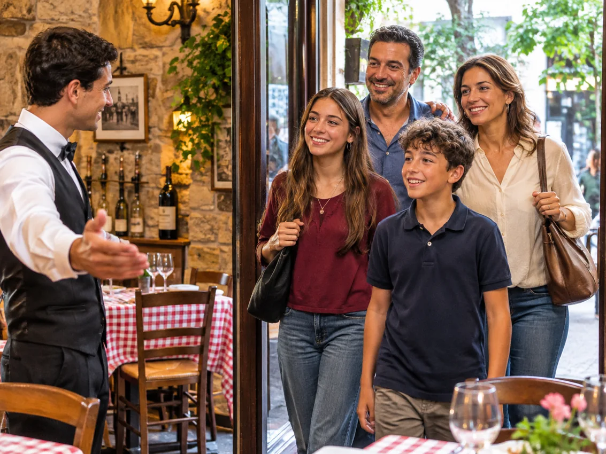
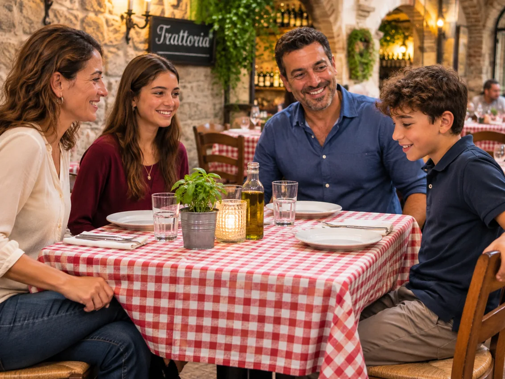
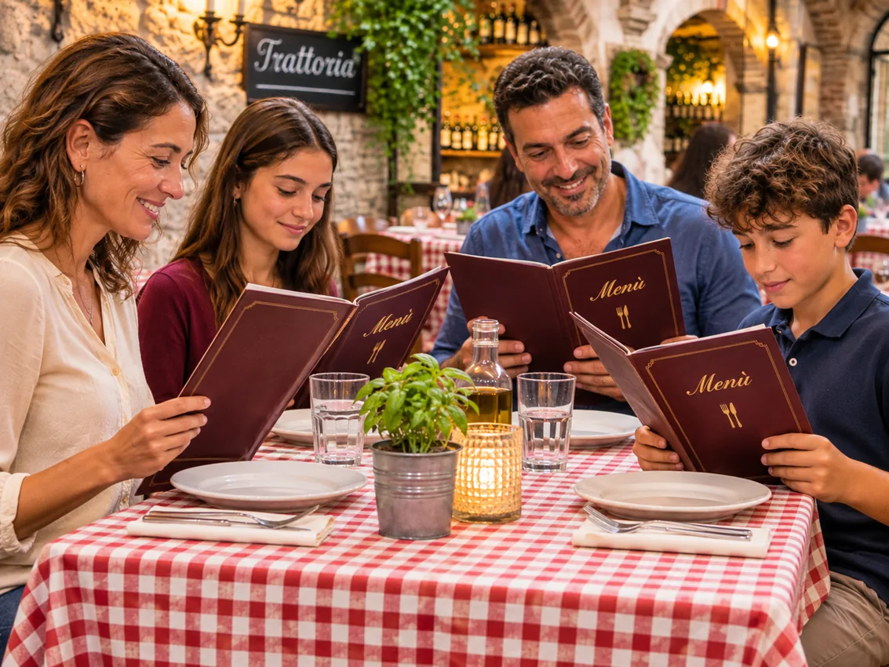
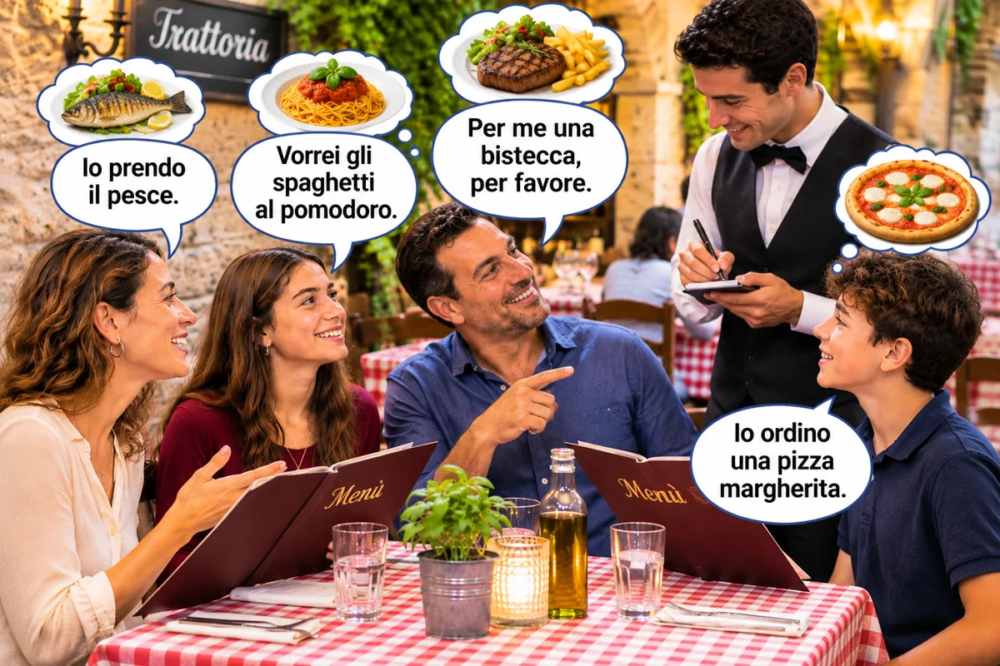
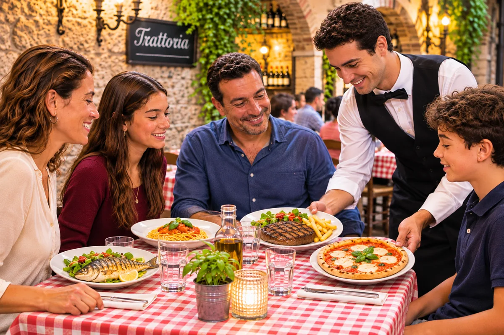
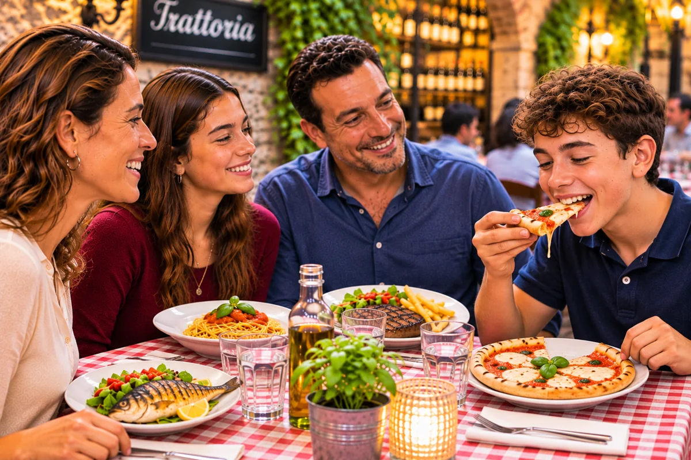
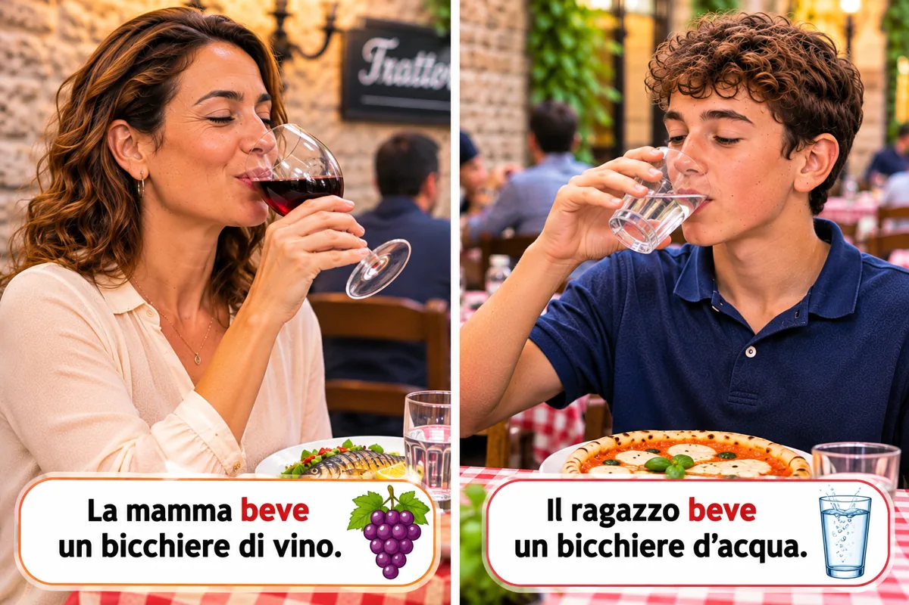
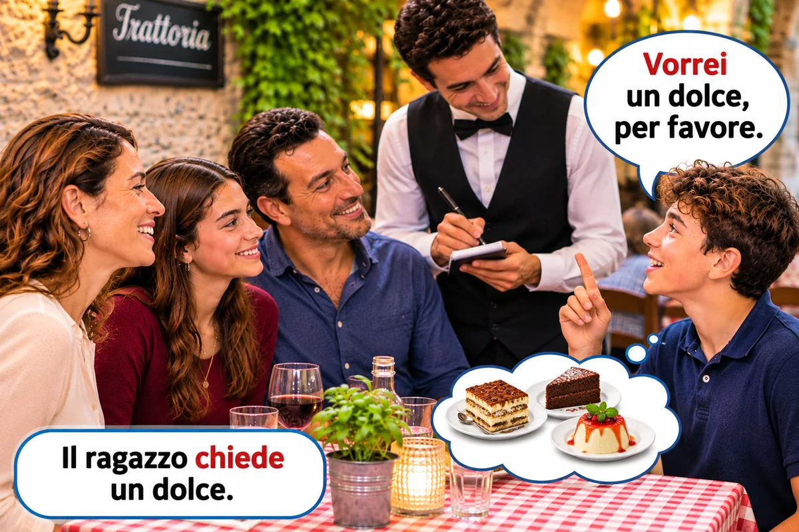
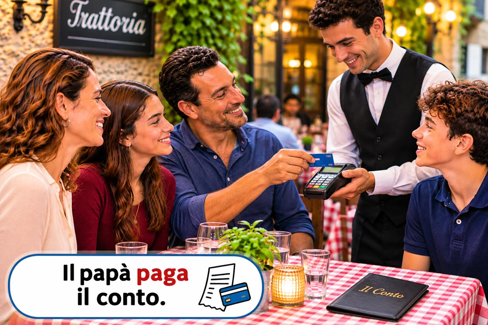
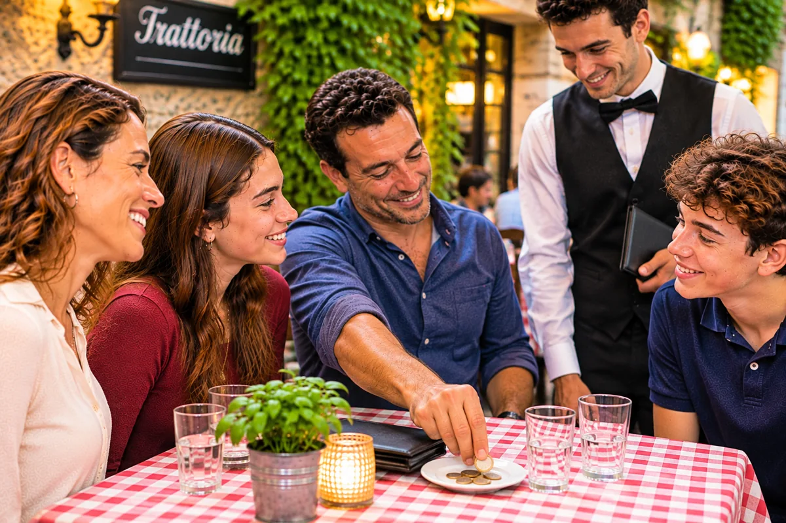

Segui la storia della famiglia in ordine cronologico: dalla prenotazione del tavolo fino all’uscita dalla trattoria. Premi Coniuga il verbo per aprirlo direttamente nel coniugatore.









